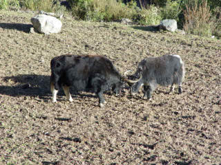
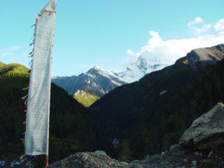
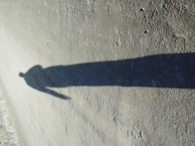

文：卞卡 图：王建硕
直到第六天翻过白雪皑皑的海子山，来到那片美丽的塔公草原，气氛才有所好转。不知道是不是天气的原因，广袤的草原看上去是墨绿色的，黑珍珠般的牦牛成群结队，悠闲安详。远山连成一条青褐色的曲线，起伏的波浪是一个个覆盖着白雪的山顶。大片的云飘在山间，云层压得很低，仿佛触手可及。在这里，除了稀薄的空气显示着海拔的高度，一眼望去，全是平原上不可见的风景。那些只能看到山峰的远山，飘在头顶的云朵，恶劣的气候下只有灌木匍匐在地上，或许只有在高原上，才能有这般的景致。车子遇到道路翻修，于是我们下车从草原上走过。
一踏上草原，脚底就开始觉得软软的惬意，仿佛一脚踏进了自然的怀抱。草地上满是蓝色、白色、黄色的小花，我弯下身子，趴在地上，把镜头对准了这些如此接近天空又如此接近土地的生灵。那么娇嫩的花朵，在高原的风中微微发颤，柔弱又不屈的样子，惹人怜爱。不远处是大群的牦牛，悠闲地散步吃草。很想靠近它们，甚至手心发痒想去摸一下那些黑色缎子般的毛皮，可是我不知道它们是否友善，是否明白我只是想亲近它们而已，所以，出于保护自己的想法，我只是远远地看着。突然间又想，人们总是把自己当作这个世界的主宰，无视其他物种的存在，这也必定会引起它们的不友好。养只宠物或许也只是出于一些自私的想法，交流和沟通的障碍，以及主宰的思想，让人变地越来越孤单了。   
过了塔公草原，就是新都桥，和来的时候一样，晚到早出，没有时间好好看看这个印象中该是很美的地方。第七天目的地就是 成都了。在康定城外接到小中山和许姐，转道下山，这时感到离成都越来越近。从高海拔的山顶慢慢下来，周围的景致越来越熟悉，与其他地方的山林没有太大的区别了。经过泸定的时候吃饭休息买特产。旁边是著名的海螺沟冰川，可惜没有时间去那里转一转了。在路边当地人的小摊上买了一块钱一斤的野生猕猴桃，尽管小，吃起来却很过瘾，还有香气漫溢的花椒，回去炒菜吃，就有了四川风味了。又到一家特产店买了牦牛肉、野山菌、牛角梳之类的特产，满载而归。然后过二郎山隧道，4。7公里的长度让它成为我国第一长隧道。听老驴们说，二郎山隧道还没建成的时候，过二郎山是一种挑战，经常有人困在上面几天下不来。现在隧道建成，这种危险也就成为了历史，可没有危险就没有挑战，又有一些人觉得没劲了。
二郎山隧道实行交通管制，下午三点是个分界点，还好我们的车子在两点多的时候顺利通过。开在下山的盘山公路上，没有迎面而来的车辆，倒是遇到了一个骑着自行车带着装备山上的外国人，满车的人都发出惊叹的声音。
四点多的时候上了成雅高速，相信这个时候每个人都归心似箭，即使车速已经到了一百多，还是觉得太慢。经过乐山，下午6点的时候，到达了我们的出发点――省体育馆。七天的时间不算太长，可是却改变了很多很多。且不说物是人非，但是一路上的经历就给每个人留下了难以磨灭的印记。
我会记住同行的每一个团友，我们在困难的时候同心协力，在快乐的时候分享自然的恩赐。7天的时间在人的一生中实在是太微不足道，可这七天的行程足以影响我的一生了。
祝福绿茶和她的家人，相信她在失去了最爱之后，会得到更多的温情和关怀。
感谢王建硕和陈国柱两位团友，为我们保存了旅途上点点滴滴，作为日后的回忆。
稻城之行已经划上句号，但我相信，我们脚下的路，我们心中的自由之歌，以及团友之间的情谊，永远不会有终结的那一天……
{kind=link}
{kind=link}
{kind=link}
{kind=link}
{kind=link}
{kind=link}